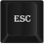

-
Press I to open/close the inventory window
-
Press C to open/close the crafting window
-
Press M to open/close the map
-

Press ESC to close all the windows
-
Press W A S D to move in all four directions
-
Press ← → ↑ ↓ to move in all four directions
some tips:
- to perform some actions you'll need a tool equipped
- to place a building use the right click and select "place"
- craft torches to see at night
- get worms from the ground to use as bait and fish
- build wooden floors to pass thorugh water
Equippment slots:
- head: nothing
- torso: nothing
- hands: nothing
- legs: nothing
- feet: nothing
- back: nothing